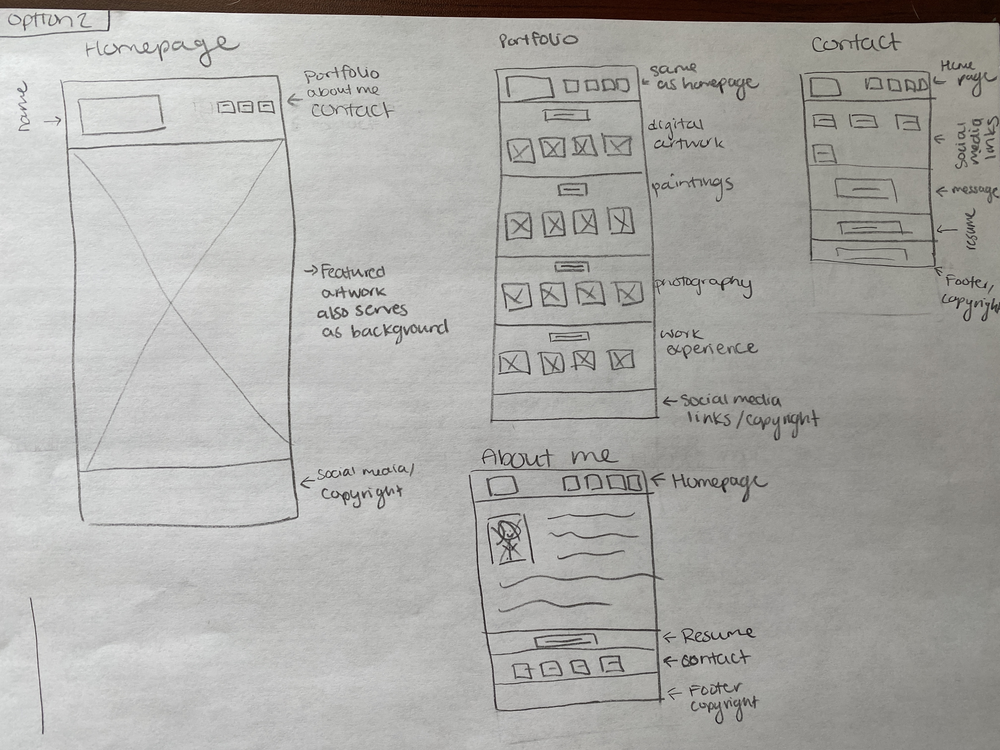

Option 1

I wanted to make the first page a big image, I liked a lot of the other porfolios I saw with little or non text but a huge image of their work. I had to redue my original wireframes as they were not really as detailed as the one out professor sent today.
option 2

Similar to what I said before I am trying to make the main page one massive image with links at the top or potentially in the middle of the page. I did not add that option here but I was also thinking about it. I should only try to prodcue what I know how to do!